命题
命题1 定理1
使木星卫星连续偏离直线运动，停留在适当轨道上向着木星而运动的力，反比于从这些卫星的处所到木星中心距离的平方。
本命题的前一部分由现象Ⅰ和第一编命题2或3证明；后一部分则由现象Ⅰ和第一编命题4推论Ⅵ证明。
环绕土星的卫星，可以由现象推知相同结论。
命题2 定理2
使行星连续偏离直线运动，停留在其适当轨道上向着太阳运动的力，反比于这些行星到太阳中心距离的平方。
本命题的前一部分可以由现象V和第一编命题2证明；后一部分可以由现象Ⅳ和第一编命题4推论Ⅵ证明。但该部分可以极高精度由远日点的静止加以证明；因为对距离的平方反比关系的极小偏差（由第一编命题45推论Ⅰ）都足以使每次环绕中的远日点产生明显运动，而在多次环绕则会产生巨大误差。
命题3 定理3
使月球停留在环绕地球轨道的力，反比于它到地球中心距离的平方。
本命题前一部分可以由现象Ⅵ和第一编命题2或3证明；后一部分则可由月球的远地点运动极慢证明；月球在每次环绕中远地点前移3°3′，可以忽略不计。因为（由第一编命题45推论Ⅰ），如果月球到地心距离比地球半径等于D比1，则导致该运动的力反比于
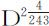
，即，反比于D的幂，指教为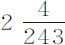
；也就是说，略大于平方反比关系，但它接近平方反比关系比接近立方反比关系强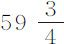
倍。而由于这项增加是太阳作用引起的（以后将讨论），在此略去不计。太阳的作用把月球自地球吸引开，约正比于月球到地球的距离；因而（由第一编命题45推论Ⅱ）比月球的向心力等于2比357.45，或接近如此；即，等于1比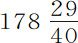
。如果忽略如此之小的太阳力，则余下使月球停留在其轨道上的力，它反比于D2 ，如果像下一个命题中那样把该力与重力作对比，这一点即可得到更充分的说明。推论．设月球向地球表面下落时，它受到的引力反比于其高度的平方增大，如果将使月球停留在其轨道上的平均向心力先按比例
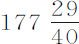
比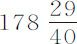
，继之按地球半径的平方，比月球与地球中心的平均距离，增大，则可以得到月球处于地球表面上时的向心力。命题4 定理4
月球吸引地球，这一重力使它连续偏离直线运动，停留在其轨道上。
月球在朔望点到地球的平均距离，以地球半径计，托勒密和大多数天文学家推算为59，凡德林（Vendelin）和惠更斯为60；哥白尼为
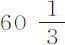
；司特里特 (1) 为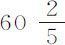
；而第谷为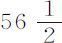
。但是第谷以及所有引用他的折射表的人，都认为阳光和月光的折射（与光的本性不合）大于恒星光的折射，在地平面附近约大4或5分钟，这样使月球地平视差增大了相同数值，即，使整个视差增大了十二或十五分之一。纠正该项误差，即得到距离约为地球半径的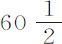
倍，接近于其他人的数值。我们设在朔望点的平均距离为地球半径的60倍；设月球的一次环绕，参照恒星时间，为27天7小时43分，与天文学家的数值相同；地球周长为123,249,600巴黎尺，法国度量制。如果月球丧失其全部运动，受使其停留在轨道上的力（命题3推论）的作用而落向地球，一分钟时间内掠过的距离为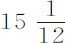
巴黎尺。这可以由第一编命题36，或（等价地）由第一编命题4推论Ⅸ推算出来。因为月球在地球半径的60倍处一分钟所掠过的轨道弧长的正矢为约 巴黎尺，或更准确地说为15尺1寸1分又
巴黎尺，或更准确地说为15尺1寸1分又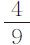
。因此，由于月球被引向地球的力比于距离平方增加，当在地球表面上时，该力为其在轨道上的60·60倍，而在地表附近，物体以该力下落时，一分钟内掠过距离为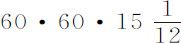
巴黎尺；一秒钟所掠过的距离为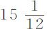
尺；或精确地说，为15尺1寸1分又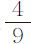
。使地球表面上物体下落的正是这个力；因为正如惠更斯先生所发现的，在巴黎的经度上，秒摆的摆长为3巴黎尺8分又 。重物体在一秒钟内下落的距离比这种摆长的一半等于圆的周长比其直径的平方（惠更斯先生已经证明过），所以为15巴黎尺1寸1分又
。重物体在一秒钟内下落的距离比这种摆长的一半等于圆的周长比其直径的平方（惠更斯先生已经证明过），所以为15巴黎尺1寸1分又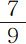
。所以，使月球停留在其轨道上的力，在月球落到地球表面上时，变为等于我们所看到的重力。所以（由规则1和2），使月球停留在其轨道上的力，与我们通常所称的重力完全相同；因为，如果重力是另一种不同的力，则落向地球的物体会受到这二种力的共同作用而使速度加倍，一秒钟内掠过的距离则应为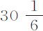
巴黎尺，这与实验相冲突。本推算以假设地球静止不动为基础；因为如果地球和月球都绕太阳运动，同时又绕它们的公共重心转动，则月球与地球中心间距离为地球半径的
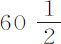
倍；这可以由第一编命题60推算出来。附注
本命题的证明可用下述方法作更详尽的解释。设若干个月球绕地球运动，像木星或土星体系那样；这些月球的周期时间（按归纳理由）应与开普勒发现的行星运动规律相同；因而由本编命题1，它们的向心力应反比于到地球中心距离的平方。如果其中轨道最低的一个很小，且与地球如此接近，几乎碰到最高的山峰顶尖，则使它停留在其轨道上的力，接近等于地面物体在该山顶上的重量，并可以由上述计算求出。如果同一个小月球失去使之维系在轨道上的离心力，并不再继续向前运动，则它将落向地球；下落速度与重物体自同一座山顶部实际下落速度相同，因为使二者下落的作用力是相等的。如果使最低轨道上的月球下落的力与重力不同，而该月球又像山顶上的地面物体那样被吸引向地球，则它应以二倍速度下落，因为受到这二种力的共同作用。所以，由于这二种力，即重物体的重力和月球的向心力，都指向地球中心，相似而且相等，它们只能（由规则1和2）有一个相同的原因。所以，使月球停留在其轨道上的力正是我们通常所说的重力；否则该小月球处在山顶时或则没有重力，或则以重物体下落速度的二倍下落。
命题5 定理5
木星的卫星被吸引向木星；土星卫星被吸引向土星；各行星被吸引向太阳；这些重力使它们偏离直线运动，停留在曲线轨道上。
因为木星卫星绕木星的运动，土星卫星绕土星的运动，以及水星、金星与其他行星绕太阳的运动，与月球绕地球的运动是同一种类的现象；因而，由规则2，必须归于同一种类的原因；尤其是，业已证明这些环绕运动所依赖的力都是指向木星、土星和太阳中心的；以及，这些力随着远离木星、土星和太阳按相同比率减小，而按同样的规律，远离地球的物体，其重力也作同样的减小。
推论Ⅰ．有一种重力作用指向所有行星和卫星；因为，毫无疑问，金星、水星，以及其他星球，与木星和土星都是同一类星体。而由于所有的吸引（由定律Ⅲ）都是相互的，木星也为其所有卫星所吸引，土星为其所有卫星所吸引，地球为月球所吸引，太阳也为其所有的行星所吸引。
推论Ⅱ．指向任意一颗行星的重力反比于由该处所到该行星中心距离的平方。
推论Ⅲ．由推论Ⅰ和Ⅱ，所有的行星相互间也吸引。因此，当木星和土星接近其交会点时，它们之间的相互作用会明显干扰对方的运动。所以太阳干扰月球的运动；太阳与月球都干扰海洋的运动，这将在以后解释。
附注
迄今为止，我们称使天体停留在其轨道上的力为向心力；但现已弄清，它不是别的，而是一种起吸引作用的力，此后我们即称为引力。因为根据规则1，2和4，使月球停留在其轨道上的向心力可以推广到所有行星和卫星。
命题6 定理6
所有物体都被吸引向每一个行星；物体对于任意一个行星的重量，在到该行星中心距离相等处，正比于物体各自所包含的物质的量。
很久以来，人们就已观测到，所有种类的重物体（除去空气的微小阻力造成的不等性和减速）从相同的高度落到地面的时间相等；而时间的相等性是由摆以很高精度测定的。我曾用金、银、铅、玻璃、沙子、食盐、木块、水和小麦做过实验。我用两只相等的圆形木盒，一只填充以木块，在另一只摆的摆动中心悬挂相同重量（尽可能地）的金。木盒所系的细绳都等于11英尺，使两只摆的重量与形状完全相同，受到的空气阻力也相等。把它们并排放在一起，长时间地观察它们同时往复的相等振动。因而（由第二编命题24推论Ⅰ和Ⅵ）金的物质量比木的物质量等于所有作用于金的运动力比所有作用于木的运动力；即，等于一个的重量比另一个的重量：对于其他物体也是如此。由这些相等重量的物体实验，我可以辨别出不到千分之一物质差别，如果有这种差别的话。然而，毫无疑问，指向行星的引力的特性与指向地球的相同，因为，如果设想把地球物体送入月球轨道，同时使月球失去其所有运动，然后使两者同时落向地球，则由以前所证明的可以肯定，在相同时间内物体掠过的距离与月球相等，因而，其与月球物质量的比，等于它们的重量比。还有，木星卫星的环绕时间正比于到木星中心距离的
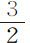
次幂，它们指向木星的加速引力反比于到木星中心的平方，即，距离相等时力也相等。所以，如果设这些卫星自相同高度落向木星，将像我们的地球物体那样，在相同时间内掠过相等距离。由相同理由，如果太阳行星自相同距离落向太阳，它们也应在相同时间内掠过相等距离。但不相等物体的相等加速力正比于物体：即是说，行星趋向太阳的重量正比于其物质的量。而且，木星及其卫星趋向太阳的重量正比于它们各自的物质量，这可以由木星卫星极为规则的运动（由第一编命题65推论Ⅲ）得到证明。因为，如果这些物体中的某几个按其物质量的比例受太阳的吸引比其他物体更强，则卫星运动会受到不相等吸引力的干扰（第二编命题65推论Ⅱ）。如果在到太阳相等距离处，任何卫星按其物质量的比例受太阳的吸引力的确大于木星所受的吸引力比其物质量，设为任意给定量d 比e ；则太阳中心与木卫星轨道中心间距将总是大于太阳中心与木星中心间距，约正比于上述比值的平方根，如我过去的计算那样。而如果卫星受太阳的吸引力偏小，偏小值为e 比d ，则卫星轨道中心到太阳的距离小于木星中心到太阳的距离，偏小值为同一比值的平方根。所以，如果在到太阳相等的距离处，任何卫星指向太阳的加速引力大于或小于木星指向太阳的加速引力的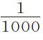
部分，则卫星轨道中心到太阳的距离将比木星到太阳距离大或小总距离的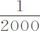
部分；即，为木星最远卫星到木星中心距离的1/5；这将使轨道的偏心变得非常明显。但卫星轨道与木星是共心的，因而木星的加速引力，以及其所有卫星指向太阳的加速引力是相等的。由相同理由，土星与其卫星指向太阳的重量，在到太阳距离相等处，正比于它们各自的物质量；月球与地球指向太阳的重量，也没有什么不同，精确地正比于它们所包含的物质质量。而按命题5推论Ⅰ和Ⅲ，它们必定有重量。此外，每个行星所有部分指向任意其他行星的重量，其相互间的比等于各部分的物质的比；因为，如果某些部分的重量比其物质的量偏大或偏小，则整个行星将根据其所含主要成分的种类，重于或轻于它与总体的物质量的比例。这些部分在行星内部或外部是无关紧要的；因为，举例来说，设与我们在一起的地球物体被举高到月球轨道，并与月球物体作比较；如果这种物体的重量比月球以外部分的重量分别等于一个或另一个物质的量，而比其内部部分的重量则偏大或偏小，那么相类似地，这些物体的重量比整个月球的重量也将偏大或偏小；这与我们以上的证明相对立。
推论Ⅰ．物体的重量不取决它的形状和结构；因为如果重量随形状而改变，则相等的物质将会随形状的变化而变重或变轻；这与经验完全不合。
推论Ⅱ．一般地，地球附近的物体都受地球的吸引；在到地心相等距离处，所有物体的重量正比于各自包含的物质的量。这正是我们实验所及范围内所有物体的本性；因而（由规则3）也是所有物体的本性。如果以太，或任何其他物体，是完全没有重量的，或所受吸引小于其物质量，则，因为（根据亚里士多德，笛卡儿等人）这些物体与其他物体除物质形状以外并没有什么区别，通过一系列由形状到形状的变化，它最终可以变成与受吸引比其物质量最大的物体条件相同的物体；而反过来，获得其最初形状的最重的物体，也将可以逐渐失去其重量。因此，重量决定物体的形状，并且随形状的改变而改变：而这与业已证明的上一推论相矛盾。
推论Ⅲ．一切空间都不是被相等地占据着；因为如果所有空间都被相等地占据着，则在空气中流淌的流体，由于物体密度极大，其比重将不会小于水银、金或任何其他密度最大的物质的比重；因而，无论是金或其他任何物体，都不可能在空气中下落；因为，除非物体的比重大于流体比重，否则它是不会在流体中下落的。而如果在任何给定空间中的物质的量可以因稀释而减小，又何以阻止它减小到无限？
推论Ⅳ．如果所有物体的所有固体粒子密度相同，且不能不通过微孔而稀释，则虚空、空间，或真空必须得到承认。我所说的相同密度的物体，指其惯性比其体积相等者。
推论Ⅴ．引力的性质与磁力不同；因为磁力并不正比于被吸引的物质。某些物体受磁石吸引较强；另一些较弱；而大多数物体则完全不被磁石吸引。同一个物体的磁力可以增强或减弱；而且远离磁石时它不正比于距离的平方而是几乎正比于距离的立方减小，我这个判断得自较粗略的观察。
命题7 定理7
对于一切物体存在着一种引力，它正比于各物体所包含的物质的量。
我们以前已证明，所有行星相互间有吸引力；还证明过，当它们相互分离时，指向每个行星的引力反比于由各行星的处所到该行星距离的平方。因此（由第一编命题69及其推论）指向所有行星的引力正比于它们所包含的物质。
此外，任意一个行星A的所有部分都受到另一个行星B的吸引；其每一部分的引力比整体的引力等于该部分的物质比总体的物质；而（由定律Ⅲ）每个作用都有一个相等的反作用；因而反过来看，行星B也受到行星A所有部分的吸引；其指向任一部分的引力比指向总体的引力等于该部分的物质比总体的物质。
证毕。
推论Ⅰ．所以，指向任意一颗行星全体的引力由指向其各部分的引力复合而成。磁和电的吸引为我们提供了这方面的例子；因为指向总体的所有吸引力是由指向各部分的吸引力合成的。如果我们设想一颗较大的行星由许多较小的行星组合成球体而形成，则引力方面的情况也不难理解；因为在此很明显地整体的力必定是由各组成部分的力合成的。如果有人提出反驳，认为根据这一规律，地球上所有的物体必定都是相互吸引的，但却不曾在任何地方发现这种引力；我的回答是，因为指向这些物体的引力比指向整个地球的引力等于这些物体比整个地球，因而指向物体的引力必定远小于能为我们的感官所察觉的程度。
推论Ⅱ．指向任意物体的各个相同粒子的引力，反比于到这些粒子距离的平方；这可以由第一编命题74推论Ⅲ证明。
命题8 定理8
在两个相互吸引的球体内，如果到球心相等距离处的物质是相似的，则一个球相对于另一个球的重量反比于二球的距离的平方。
我在发现指向整个行星的引力由指向其各部分的引力复合而成，而且指向其各部分的引力反比于到该部分距离的平方之后，仍不能肯定，在合力由如此之多的分力组成的情况下，究竟距离的平方反比关系是精确成立，还是近似如此；因为有可能这一在较大距离上足以精确成立的比例关系在行星表面附近时会失效，在该处粒子间距离是不相等，而且位置也不相似。但借助于第一编命题75和76及其推论，我最终满意地证明了本命题的真实性，如我们现在所看到的。
推论Ⅰ．由此我们可以求出并比较各物体相对于不同行星的重量；因为沿圆轨道绕行星转动的物体的重量（由第一编命题4推论Ⅱ）正比于轨道直径反比于周期的平方；而它们在行星表面，或在距行星中心任意远处的重量（由本命题）将正比于距离的平方而变大或变小。金星绕太阳运动周期为224天
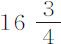
小时；木卫四绕木星周期为16天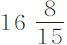
小时；惠更斯卫星绕土星周期为15天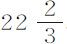
小时；而月球绕地球周期为27天7小时43分；将金星到太阳的平均距离与木卫四到木星中心的最大距角，8′16″；惠更斯卫星到土星中心距角，3′4″；以及月球到地球距角10′33″作一比较，通过计算，我发现相等物体在到太阳、木星、土星和地球的中心相等距离处，其重量之间的比分别等于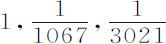
和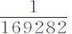
。因为随着距离的增大或减小，重量按平方关系减小或增大，相等的物体相对于太阳、木星、土星和地球的重量，在到它们的中心距离为10,000；997；791和109时，即物体刚好在它们的表面上时，分别正比于10,000；943；529和435。这一重量在月球表面上为多少，将在以后求出。推论Ⅱ．用类似方法可以求出各行星物质的量；因为它们的物质的量在到其中心距离相等处正比于引力；即，在太阳、木星、土星和地球上，分别正比于
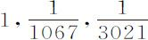
和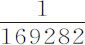
。如果太阳视差大于或小于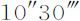
，则地球的物质量必定正比于该比值的立方增大或减小。推论Ⅲ．我们也可以求出行星的密度；因为（由第一编命题72）相等且相似的物体相对于相似球体的重量，在该球体表面上，正比于球体直径；因而相似球体的密度正比于该重量除以球直径。而太阳、木星、土星和地球直径相互间的比为10,000；997；791和109；指向它们的重量比分别为10,000；943；529和435；所以，它们的密度比为
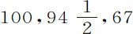
和400。在此计算中，地球密度并不取决于太阳视差，而是由月球视差求出的，因此是可靠的。所以，太阳密度略大于木星，木星大于土星，而地球密度是太阳的四倍；因为太阳很热，处于一种稀薄状态。以后将会看到，月球密度大于地球。推论Ⅳ．其他条件不变时，行星越小，其密度即按比率越大；因为这样可以使它们各自的表面引力近于相等。类似地，在其他条件相同时，它们距太阳越近，密度越大，所以木星密度大于土星，而地球大于木星；因为各行星被分置于到太阳不同距离处，使得它们按其密度的程度，享受太阳热量的较大或较小比例。地面上的水，如果送到土星轨道的地方，则会变为冰，而在水星轨道处，则会变为蒸汽而飞散；因为正比于太阳热的阳光，在水星轨道处是我们的七倍，我曾用温度计发现，七倍于夏日阳光的热会使水沸腾。毋庸置疑，水星物质必定适应其热度，因此其密度大于地球物质；这是由于对于较密的物质，自然的作用需要更强的热。
命题9 定理9
在行星表面以下，引力近似正比于到行星中心的距离减小。
如果行星由均匀密度物质构成，则本命题精确成立（由第一编命题73）。因此，其误差不会大于密度均差所产生的误差。
命题10 定理10
行星在天空中的运动将持续极长的时间。
在第二编命题40的附注中，我曾证明冻结成冰的水球，在空气中自由运动时，掠过其半径的长度时空气阻力使其失去总运动的
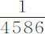
部分；同样的比率适用于所有球，不论它有多大，速度多快。但地球的密度比它仅由水组成要大得多，我的证明如下。如果地球只是由水组成的，则凡是密度小于水的物体，因其比重较小，将漂浮在水面上。根据这一理由，如果一个由地球物质组成的球体四周为水所包围，则由于它的密度小于水，将会在某处漂浮起来，而水则下沉聚集到相反的一侧。而我们地球的状况是，其表面很大部分为海洋所包围。如果地球密度不大于水，则应在海洋中漂浮起来，并根据它稀疏的程度，在洋面上或多或少地露出，而海洋中的水则流向相反的一侧。由同样的理由，太阳的黑斑，漂浮在发光物质的上面，轻于这种物质；而不论行星是如何构成的，只要它是流体物质，所有更重的物质都将沉入中心。所以，由于我们地球表面上的普通物质为水的重量的二倍，在较深处的矿井中，物质约重三倍，或四倍，甚至五倍，所以，地球总物质量约比它由水构成时重五倍或六倍；尤其是，我已证明过，地球密度约比木星大四倍。所以，如果木星密度比水略大，则在30天里，在木星掠过459个半径长度的空间内，它在与空气密度相同的介质中约失去其运动的1/10部分。但由于介质阻力正比于其重量或密度减小，使得比水银轻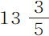
倍的水其阻力也比水银小相同倍数；而空气又比水轻860倍，其阻力也小同样多倍；所以在天空中，由于行星于其中运动的介质的重量极小，其阻力几乎为零。在第二编命题22的附注中，曾证明在地面以上200英里高处，空气密度比地面空气密度小，其比值为30比0.0000000000003998，或近似等于75,000,000,000,000比1，所以如果木星在密度等于该上层空气密度的介质中运动，则100万年中，介质阻力只使它失去百万分之一部分的运动。在地球附近的空间中，阻力只由空气、薄雾和蒸气产生。如果用装在容器底部的空气泵仔细地抽去，则在容器内下落的重物体是完全自由的，没有任何可察觉的阻力：金与最轻的物体同时下落，速度是相等的；虽然它们通过的空间长达4、6或8英尺，却在同时到达瓶底；实验证明了这一点。所以，在天空中完全没有空气和雾气，行星和彗星在这样的空间中不受明显的阻力作用，将在其中运动极长的时间。
假设1
宇宙体系的中心是不动的。
所有人都承认这一点。只不过有些人认为是地球，而另一些认为是太阳处于这个中心。让我们来看看由此会导致什么结果。
命题11 定理11
地球、太阳以及所有行星的公共重心是不动的。
因为（由运动定律推论Ⅳ）该重心或是静止的，或做匀速直线运动；而如果该重心是运动的，则宇宙的重心也运动，这与假设相矛盾。
命题12 定理12
太阳受到一个连续运动的推动，但从来不会远离所有行星的公共重心。
因为（由命题8推论Ⅱ）太阳的物质量比木星的物质量等于1067比1；木星到太阳的距离比太阳半径略大于该比率，所以木星与太阳的共同重心将落在位于太阳表面以内的一点上。由同样理由，由于太阳物质量比土星物质量等于3021比1，土星到太阳的距离比太阳半径略小于该比率，所以土星与太阳的公共重心位于太阳内略靠近表面的一点上。应用相同的计算原理，我们会发现，即使地球与所有的行星都位于太阳的同侧，全体的公共重心到太阳中心的距离也很难超出太阳直径。而在其他情形中，这两个中心间距总是更小；所以，由于该重心保持静止，太阳会因为行星的不同位置而游移不定，但决不会远离该重心。
推论．因此，地球、太阳以及所有行星的公共重心，可以看做是宇宙的中心；因为地球、太阳和所有的行星相互吸引，因而像运动定律所说的那样，根据各自吸引力的大小而持续地相互推动，不难理解，它们的运动中心不能看做是宇宙的静止中心。如果把某物体置于该中心，能使其他物体受它的吸引最大（根据常识），则优先权非太阳莫属；但因为太阳本身也在运动，固定点只能选在太阳中心相距最近处，而且当太阳密度和体积变大时，该距离会变得更小，因而使太阳运动更小。
命题13 定理13
行星沿椭圆轨道运动，其公共焦点位于太阳中心，而且，伸向该中心的半径所掠过的面积正比于运行时间。
我们以前在现象一节中已讨论过这些运动。我们既已知道这些运动所依据的原理，就由这些原理推算天空中的运动。因为行星相对于太阳的重量反比于它们到太阳中心距离的平方，如果太阳静止，各行星间无相互作用，则行星轨道为椭圆，太阳在其一个焦点上；由第一编命题1和11，以及命题13推论Ⅰ知，它们掠过的面积正比于运行时间。但行星之间的相互作用如此之小，可以加以忽略；而由第一编命题66，这种相互作用对行星绕运动着的太阳运动的干扰，小于假设太阳处于静止时所造成的影响。
实际上，木星对土星的作用不能忽略；因为指向木星的引力比指向太阳的引力（在相等距离处，命题8推论Ⅱ）等于1比1067；因而在木星和土星的交会点，因为土星到木星的距离比土星到太阳的距离约等于4比9，土星指向木星的引力比土星指向太阳的引力等于81比16·1067；或约等于1比211。由此而在土星与木星交会点产生的土星轨道摄动是如此明显，令天文学家们迷惑不解。由于土星在交会点的位置的变化，它的轨道偏心率有时增大，有时减小；它的远日点有时顺行，有时逆行，而且其平均运动交替地加速和放慢；然而它绕太阳运动的总误差，虽然是由如此之大的力产生的，却几乎可以通过把它的轨道的低焦点置于木星与太阳的公共重心（根据第一编命题67）上而完全避免（平均运动除外），所以该误差在最大时很少超过2分钟；而平均运动中，最大误差则很少超过每年2分钟。但在木星与土星交会点处，太阳指向土星，木星指向土星，以及木星指向太阳的加速引力，相互间的比约16，81和
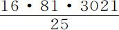
，或156,609；因而太阳指向土星与木星指向土星的引力差，比木星指向太阳的引力约为65比156,609，或为1比2409。但土星干扰木星运动的最大能力正比于这个差；所以木星轨道的摄动远小于土星。其指行星的轨道，除了地球轨道受月球的明显干扰外，其摄动都远小得多。地球与月球的公共重心沿以太阳为焦点的椭圆运动，其所向太阳的半径所掠过的面积正比于运动时间。而地球又绕该重心作每月一周的运动。命题14 定理14
行星轨道的远日点和交点是不动的。
远日点不动可以由第一编命题11证明；轨道平面不动可以由第一编命题1证明。如果轨道平面是固定的，其交点必定也是固定的。实际上行星与彗星在环绕运动中的相互作用会造成移动，但它们极小，在此可以不予考虑。
推论Ⅰ．恒星是不动的，因为观测表明它们与行星的远日点和轨道交点保持不变位置。
推论Ⅱ．由于在地球年运动中看不到恒星的视差，它们必由于相距极远而不对我们的宇宙产生任何明显的作用。更不用说恒星无处不在地分布于整个天空，由第一编命题70知，它们的反向吸引作用抵消了相互作用。
附注
由于接近太阳的行星（即水星、金星、地球和火星）如此之小，致使相互间的作用力很小，因而它们的远日点和交点必定是固定的，除非受到木星和土星以及更远物体作用的干扰。由此我们可以用引力理论求得，行星远日点相对恒星的微小前移，它正比于各行星到太阳距离的
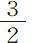
次幂。这样，如果火星的远日点在100年时间里相对于恒星前移33′20″，则地球、金星和水星的远日点在100年里分别前移17′40″，10′53″和4′16″。由于这些运动很不明显，所以在本命题中加以忽略了。命题15 问题1
求行星轨道的主径。
由第一编命题15，它们正比于周期的
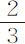
次幂，而根据该编命题60，它们各自按太阳与行星物质量的和的三次方根与太阳质量的三次方根的比而增大。命题16 问题2
求行星轨道的偏心率和远日点。
本问题可以由第一编命题18求解。
命题17 定理15
行星的周日运动是均匀的，月球的天平动是由这种周日运动产生的。
本命题可以由第一运动定律和第一编命题66推论ⅩⅫ证明。在现象一节中已指出，木星相对于恒星的转动为9小时56分，火星为24小时39分，金星约为23小时，地球为23小时56分，太阳为
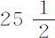
天，月球为27天7小时43分。太阳表面黑斑回到日面相同位置的时间，相对于地球为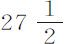
天；所以相对于恒星太阳自转需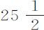
。但因为由月球均匀自转而产生的太阳日长达一个月，即，等于它在轨道上环绕一周的时间，所以月球朝向轨道上焦点的面几乎总是相同的；但随着该焦点位置的变化，该面也朝一侧或另一侧偏向处于低焦点的地球，这就是月球的经度天平动；而纬度天平动是由月球纬度以及自转轴对黄道平面的倾斜所引起的。这一月球天平动理论，N. 默卡特 (2) 先生在1676年初出版的《天文学》一书中，已根据我写给他的信作了详尽阐述。土星最外层的卫星似乎也与月球一样地自转，总是以相同的一面朝向土星；因为它在环绕土星运动中，每当接近轨道东部时，即很难发现，并逐渐完全消失；正如M. 卡西尼所注意到的那样，这可能是由于此时朝向地球的一面上有些黑斑所致。木星最远的卫星似乎也作类似的运动，因为在它背向木星的一面上有一个黑斑，而每当该卫星在木星与我们眼睛之间通过时，它看上去总是像在木星上似的。命题18 定理16
行星的轴小于与该轴垂直的直径。
行星各部分相等的引力，如果不使它产生自转，则必使它成为球形。自转运动使远离轴的部分在赤道附近隆起；如果行星物质处于流体状态，则这种向赤道的隆起使那里的直径增大，并使指向两极的轴缩短。所以木星直径（根据天文学家们公认的观测）在两极方向小于东西方向。由同样理由，如果地球在赤道附近不高于两极，则海洋将在两极附近下沉，而在赤道隆起，并将那里的一切置于水下。
命题19 问题3
求行星的轴与垂直于该轴的直径的比例。
1635年，我们的同胞，诺伍德 (3) 先生测出伦敦与约克（York）之间的距离为905,751英尺，纬度差为2°28′，求出一度长为367,196英尺，即，57,300巴黎托瓦兹。 (4) M. 皮卡德 (5) 测出亚眠（Amien）与马尔瓦新（Malvoisine）之间的子午线弧为22′55″，推算出每度弧长为57,060巴黎托瓦兹。老M. 卡西尼测出罗西隆（Roussillon）的科里乌尔（Collioure）镇到巴黎天文台之间的子午线距离；他的儿子把这一距离由天文台延长到敦刻尔克的西塔德尔（Citadel of Dunkirk）。总距离为
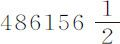
托瓦兹，科里乌尔与敦刻尔克之间的纬度差为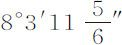
。因此每度弧长为57,061巴黎托瓦兹。由这些测量可以得出地球周长为123,249,600，半径为19,615,800巴黎尺，假设地球为球形。在巴黎的纬度上，前面已说过，重物体一秒时间内下落距离为15巴黎尺1寸
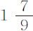
分，即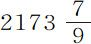
分。物体的重量会由于周围空气的重量而变轻。设由此损失的重量占总重量的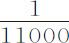
部分；则该重物体在真空中下落时一秒钟内掠过2174分。在长为23小时56分4秒的恒星日中，物体在距中心19,615,800尺处作匀速圆周运动，每秒钟掠过弧长1433.6尺；其正矢为0.05236516尺，或7.54064分。所以，在巴黎纬度上，使物体下落的力比物体在赤道上由于地球周日运动而产生的离心力等于2174比7.54064。
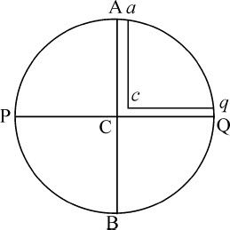
物体在赤道的离心力比在巴黎48°50′10″的纬度上使物体沿直线离开的力，等于半径与该纬度的余弦的比的平方，即等于7.54064比3.267。把这个力迭加到在巴黎纬度使物体由其重量而下落的力上，则在该纬度上，物体受未减小的引力作用而下落，一秒钟将掠过2177.267分，或15巴黎尺1寸又5.267分。在该纬度上的总引力比物体在地球赤道处的离心力等于2177.269比7.54064，或等于289比1。
所以，如果APBQ表示地球形状，它不再是球形的，而是由绕短轴PQ的转动而形成椭球；ACQqca 表示注满水的管道，由极点Qq 经过中心Cc 通向赤道Aa ；则在管道的ACca 段中水的重量比在另一段QCcq 中水的重量等于289比288，因为自转运动产生的离心力维持并抵消了
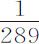
部分的重量（在—段之中），另外288份的水维持着其余重量。通过计算（由第一编命题91推论Ⅱ），我发现，如果地球物质都是均匀的，而且没有运动，其轴PQ比直径AB等于100比101，处所Q指向地球的引力比同一处所Q指向以PC或QC为半径，以C为球心的球体的重力，等于126比125。由相同理由，处所A指向由椭圆APBQ关于轴AB转动所形成的椭球的引力，比同一处所A指向半径为AC球心为C的球体的引力，等于125比126。而处所A指向地球的引力是指向该椭球体与指向该球体的引力的比例中项；因为，当球直径PQ按101比100的比例减小时，即变为地球的形状；而这样的形状，其垂直于两个直径AB和PQ的第三个直径也按相同比例减小，即变为所说的椭球形状；在这种情形中，A处的引力都按近似相同的比例减小。所以，A处指向球心为C半径为AC的球体的引力，比A处指向地球的引力，等于126比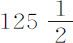
。而处所Q指向以C为球心以QC为半径的球体的引力，比处所A指向以C为球心，AC为半径的球体的引力，等于直径的比（由第一编命题72），即等于100比101。所以，如果把三个比例，126比125，126比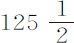
，以及100比101连乘，即得到处所Q指向地球的引力比处所A指向地球的引力，等于126·126·100比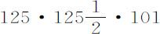
；或等于501比500。由于（第一编命题91推论Ⅲ）在管道的任意一段ACca 或QCcq 中，引力正比于由其处所到地球中心的距离，如果这二段由平行等距的横截面加以分割，生成的部分正比于总体，则在ACca 段中任意一个部分的重量比另一段中相同数目的部分的重量，等于它们的大小乘以加速引力的比，即等于101比100乘以500比501，或等于505比501。所以，如果ACca 段中每一部分的由自转产生的离心力，比相同部分的重量，等于4比505，使得在被分为505等份的每一部分的重量中，离心力可以抵消其中4份，则余下的重量在两段管道中保持相等，因而流体可以维持平衡而静止。但第一部分的离心力比同一部分的重量等于1比289；即，应占
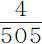
的离心力，实际中占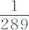
。所以，我认为，由比例的规则，如果 的离心力使得管道ACca 段中水的高度比QCcq 段中水的高度能高出其总高度的 部分，则 的离心力将只能使ACca 段中水的高度比另一段QCcq 中水的高度高出 部分；所以地球在赤道的直径比它在两极的直径为230比229。由于根据皮卡德的测算，地球的平均直径为19,615,800巴黎尺，或3923.16英里（5000尺为一英里），所以地球在赤道处比在两极处高出85,472尺，或 英里。其赤道处高约19,658600尺，而两极处约19,573,000尺。如果在自转中密度与周期保持不变，则大于或小于地球的行星，其离心力比引力，进而两极直径比赤道直径，也都类似地保持不变。但如果自转运动以任何比例加快或减慢，则离心力近似地以同一比例的平方增大或减小；因而直径的差也非常近似地以同一比率的平方增大或减小。如果行星的密度以任何比例增大或减小，则指向它的引力也以同样比例增大或减小：相反的，直径的差正比于引力的增大而减小，正比于引力的减小而增大。所以，由于地球相对于恒星的自转时间为23小时56分，而木星为9小时56分，它们的周期平方比为29比5，密度比为400比 ，木星的直径差比其短直径为 比1，或近似为1比 。所以木星的东西直径比其两极直径约为 比 。所以，由于它的最大直径为37″，其两极间的最小直径为 。加上大约3″的光线不规则折射，该行星的视在直径为40″和 ；相互间的比值极近似于 比 。在此，假定木星星体的密度是均匀的。但如果该行星在赤道附近的密度大于在两极附近的密度，其直径比可能为12比11，或13比12，也许为14比13。
1691年，卡西尼发现，木星的东西向直径约比另一直径大1/15部分。庞德先生在1719年用他的123英尺望远镜配以优良的千分仪，测得木星两种直径如下：
所以本理论与现象是一致的；因为该行星在赤道附近受太阳光线的加热较强，因而其密度比两极处略大。
此外，地球的自转会使引力减小，因而赤道处的隆起高于两极（设地球物质密度均匀），这可以由与下述命题相关的摆实验证实。
命题20 问题4
求地球上不同区域处物体的重量并加以比较。
因为在不等长管道段中的水ACQqca 的重量相等；各部分的重量正比于整段的重量，且位置相似者，相互间重量比等于总重量比，因而它们的重量相等；在各段中位置相似的相等部分，其重量的比等于管道长的反比，即反比于230比229。这种情形适用于所有与管道中的水位置相似的均匀相等的物体。它们的重量反比于管长，即反比于物体到地心的距离。所以，如果物体置于管道最顶端，或置于地球表面上，则它们的重量的比等于它们到地心距离的反比。由同样理由，置于地球表面任意其他处所的物体，其重量反比于到地球中心的距离。所以，只要假设地球是椭球体，该比值即已给定。
由此即得到定理，由赤道移向两极的物体其重量增加近似正比于二倍纬度的正矢。或者，与之等价地，正比于纬度正弦的平方；而子午线上纬度弧长也大致按相同比例增大。所以，由于巴黎纬度为48°50′，赤道纬度为00°00′，两极纬度为90°；这些弧的二倍的正矢为11,334；00,000；和20,000，半径为10,000；极地引力比赤道引力为230比229；极地引力的出超比赤道引力等于1比229；巴黎纬度的引力出超比赤道引力为 比229，或等于5667比2,290,000。所以，该处总引力比另一处总引力等于2,295,667比2,290,000。所以，由于时间相等的摆长正比于引力，在巴黎纬度上秒摆摆长为3巴黎尺又 分，或考虑到空气的重量，为3尺又 分，而在赤道，时间相同的摆长要短1.087分。用类似的计算可制成下表。
此表表明，每度子午线长的不均匀性极小，因而在地理学上可把地球形状视为球形；如果地球密度在赤道平面附近略大于两极处的话，则尤其如此。
今天，有些到遥远的国家做天文观测的天文学家发现，摆钟在赤道附近的确比在我们这里走得慢些。首先是在1672年，M·里歇尔 (6) 在凯恩岛（island of Cayenne）注意到了这一点；当时是8月份，他正观测恒星沿子午线的移动，他发现他的摆钟相对于太阳的平均运动每天慢2分28秒。于是他制作了一只时间为秒的单摆，用一只优良的钟校准，并测量该单摆的长度；在整整10个月里他坚持每星期测量。回到法国后，他把这只摆的长度与巴黎的摆长（长3巴黎尺又 分）作了比较，发现它短了 分。
后来，我们的朋友哈雷博士，约在1677年到达圣赫勒拿岛（island of St. Helena），他发现与伦敦制作相同的摆钟到那里后变慢了。他把摆杆缩短了 寸，或 分；为此，由于在摆杆底部的螺纹失效，他在螺母和摆锤之间垫了一只木圈。
嗣后，在1682年，法林（M. Varin）和德斯海斯（M. des Hayes）发现，在巴黎皇家天文台摆动为一秒的单摆长度，为3尺又 分。而用相同的手段在戈雷岛（island of Goree）测量时，等时摆的长度为3尺又 分，比前者短了二分。同一年里，他们又在瓜达罗普和马丁尼古岛（islands of Guadaloupe and Martinico）发现，在这些岛的等时摆长为3尺又 分。
以后，小M. 库普莱（M. Couplet）在1697年7月，在巴黎皇家天文台把他的摆钟与太阳的平均运动校准，使之在相当长时间里与太阳运动吻合。次年11月，他到里斯本，发现他的钟在24小时里比原先慢2分13秒；再次年3月，他到达帕雷巴（Paraiba），发现他的钟比在巴黎，24小时里慢4分12秒；他断定在里斯本的秒摆要比巴黎短 分，而在帕雷巴短 分。如果他计算的差值为 分和 分的话，他的工作将更出色：因为这些差值才对应于时间差2分13秒和4分12秒，但这位先生的观测太粗糙了，使我们无法相信。
后来在1699年和1700年，M. 德斯海斯再次航行美洲，他发现在凯恩和格林纳达（Granada）岛秒摆略短于3尺又 分；而在圣·克里斯托弗岛（island of St. Christopher）为3尺 分；在圣·多明戈岛（island of St. Domingo）为3尺7分。
1704年，弗勒 (7) 在美洲的皮尔托·贝卢（Puerto Bello）发现，那里的秒摆仅为3巴黎尺又 分，比在巴黎几乎短3分；但这次观测是失败的。因为他后来到达马丁尼古岛时，发现那里的等时摆长为3巴黎尺又 分。
帕雷巴在南纬6°38′；皮尔托·贝卢为北纬9°33′；凯恩、戈雷、瓜达罗普、马丁尼古、格林那达、圣·克里斯托弗和圣·多明戈诸岛分别为北纬4°55′，14°40′，15°00′，14°44′，12°06′，17°19′和19°48′，巴黎秒摆的长度比在这些纬度上的等时摆所超出的长度略大于在上表中所求出的值。所以，地球在赤道处应略高于上述推算，地心处的密度应略大于地表，除非热带地区的热也许会使摆长增加。
因为，M. 皮卡德曾发现，在冬季冰冻天气下长1英尺的铁棒，放到火中加热后，长度变为1英尺又 分。后来，M·德拉希尔发现在类似严冬季节长6英尺的铁棒放到夏季阳光下曝晒后伸长为6英尺又 分。前一种情形中的热比后一种强，而在后一情形中也热于人体表面；因为在夏日阳光下曝晒的金属能获得相当可观的热度。但摆钟的杆从未受过夏日阳光的曝晒，也未获得过与人体表面相等的热；因而，虽然3尺长的摆钟杆在夏天的确会比冬天略长一些，但差别很难超过 分。所以，在不同环境下等时摆钟摆长的差别不能解释为热的差别；法国天文学家并没有错。虽然他们的观测之间一致性并不理想，但其间的误差是可以忽略的；他们的一致之处在于，等时摆在赤道比在巴黎天文台短，差别不小于 分，不大于 分。M·里歇尔在凯恩岛给出的观测是，差为 分。这一差值为M·德斯海斯的观测所纠正，变为 分或 。其他人精度较差的观测结果约为2分。这种不一致可能部分由于观测误差，部分则由于地球内部部分的不相似性，以及山峰的高度；还部分地来自空气温度的差异。
我用的一根3尺长的铁棒，在英格兰，冬天比夏天短六分之一。因为在赤道处酷热，从M·里歇尔的观测结果 分中减去这个量，尚余 分，这与我们先前在本理论中得到的 符合极好。M·里歇尔在凯恩岛的实验在整整10个月里每周都重复，并把他所发现的摆长与记在铁棒上的在法国的长度相比较。这种勤勉与谨慎似乎正是其他观测者所缺乏的。我们如果采用这位先生的观测，则地球在赤道比在极地处高，差值约为17英里，这证实了上述理论。
命题21 定理17
二分点总是后移的，地轴通过公转运动中的章动，每年两次接近黄道，两次回到原先的位置。
本命题通过第一编命题66推论ⅩⅩ证明；而章动的运动必定极小，的确难以察觉。
命题22 定理18
月球的一切运动，及其运动的一切不相等性，都是以上述诸原理为原因的。
根据第一编命题65，较大行星在绕太阳运动的同时，可以使较小的卫星绕它们自己运动，这些较小的卫星必定沿椭圆运动，其焦点在较大行星的中心。但它们的运动受到太阳作用的若干种方式的干扰，并像月球那样使运动的相等性遭到破坏。月球（由第一编命题66推论Ⅱ，Ⅲ，Ⅳ和Ⅴ）运动越快其伸向地球的半径同时所掠过的面积越大，则其轨道的弯曲越小，因而它在朔望点较在方照点距地球更近，除非这些效应受到偏心运动的阻碍；因为（由第一编命题66推论Ⅸ）当远地点位于朔望点时，偏心率最大，而在方照点时最小；因此月球在近地点的运动，在朔望点较在方照点运动更快，距我们更近，而在远地点的运动，在朔望点较在方照点运动更慢且距我们更远。此外，远地点是前移的，而交会点则是后移的；而这并不是由规则的，而是由不相等运动造成的。因为（由第一编命题66推论Ⅶ和Ⅷ）远地点在朔望点时前移较快，在方照点时后移较慢；这种顺行与逆行的差造成年度前移。而交会点情况相反（由第一编命题66推论Ⅺ），它在朔望点是静止的，在方照点后移最快。还有，月球的最大黄纬（由第一编命题66推论Ⅹ）在月球的方照点大于在朔望点。月球的平均运动在地球的近日点较在其远日点为慢。这些都是天文学家已注意到的（月球运动的）基本不相等性。
但还有一些不相等性不为上述天文学家所认同，它们对月球运动造成的干扰迄今我们尚无法纳入某种规律支配之下。因为月球远地点和交会点的速度或每小时的运动及其均差，以及在朔望点的最大偏心率与在方照点的最小偏心率的差，还有我们称之为变差的不相等性，是（由第一编命题66推论ⅩⅣ）在一年时间内正比于太阳的视在直径的立方而增减的。此外（由第一编引理10推论Ⅰ和Ⅱ，以及命题66推论ⅩⅥ）变差是近似地正比于在朔望之间的时间的平方而增减的。但在天文学计算中，这种不相等性一般都归入月球中心运动的均差之中。
命题23 问题5
由月球运动导出木星和土星卫星的不相等运动。
运用下述方法，可以运用第一编命题66推论ⅩⅥ，由月球运动推算出木星卫星的对应运动。木星最外层卫星交会点的平均运动比月球交会点的平均运动，等于地球绕日周期与木星绕日周期的比的平方，乘以木卫星绕木星的周期比月球绕地球的周期；所以，这些交会点在100年时间里后移或前移8°24′。由同一个推论，内层卫星交会点平均运动比外层卫星交会点的平均运动等于后者的周期比前者的周期，因而也可以求出。而每个卫星上回归点的前移运动比其交会点的后移运动等于月球远地点的运动比其交会点的运动（由同一推论），因而也可以求出，但由此求出的回归点运动必须按5比9或1比2减小，其原因我不能在此解释。每个卫星的交会点最大均差和上回归点的最大均差，分别比月球的交会点最大均差和远地点最大均差，等于在前一均差的环绕时间内卫星的交会点和上回归点的运动比在后一均差的环绕时间内，月球的交会点和远地点的运动。木星上看其卫星的变差比月球的变差，由同一推论，等于这些卫星和月球分别在环绕太阳（由离开到转回）期间的总运动的比；所以最外层卫星 (8) 的变差不会超过5.2秒。
命题24 定理19
海洋的涨潮和落潮是由于太阳和月球的作用引起的。
由第一编命题66推论ⅪⅩ或ⅩⅩ可知，海水在每天都涨落各二次，月球日与太阳日一样；而且在开阔而幽深的海洋里的海水应在日、月球到达当地子午线后6小时以内达到最大高度；地处法国与好望角之间的大西洋和埃塞俄比亚海东部海域就是如此；在南部海洋的智利和秘鲁沿岸也是如此；在这些海岸上涨潮约发生在第二、第三或第四小时，除非来自深海的潮水运动受到海湾浅滩的导引而流向某些特殊去处，延迟到第五、第六或第七小时，甚至更晚。我所说的小时是由日、月抵达当地子午线，或正好低于或高于地平线时起算的；月球日是月球通过其视在周日运动经过一天后再次回到当地子午线所需的时间，小时是该时间的1/24。日、月到达当地子午线时海洋涨潮力最大；但此时作用于海水的力会持续一段时间，并由于新的虽然较小的但仍作用于它的力的加入而不断增强。这使洋面越来越高，直到该力衰弱到再也无法举起它为止，此时洋面达到最大高度。这一过程也许要持续一或两小时，而在浅海沿岸，常会持续约3小时，甚至更久。
太阳和月球激起二种运动，它们没有明显区别，却在二者之间合成一个复合运动。在日、月的会合点或对冲点，它们的力合并在一起，形成最大的涨潮和退潮。在方照点，太阳举起月球的落潮，或使月球的涨潮退落，它们的力的差造成最小的潮。因为（如经验告诉我们的那样）月球的力大于太阳的力，水的最大高度约发生在第三个月球小时。除朔望点和方照点外，单独由月球力引起的最大潮应发生在第三个月球小时，而单独由太阳引起的最大潮应发生在第三个太阳小时，这二者的复合力引起的潮应发生在一个中间时间，且距第三个月球小时较近。所以，当月球由朔望点移向方照点时，在此期间第三个太阳小时领先于第三个月球小时，水的最大高度也先于第三个月球小时到达，并以最大间隔稍落后于月球的八分点；而当月球由方照点移向朔望点时，最大潮又以相同间隔落后于第三月球小时。这些情形发生于辽阔海面上；在河口处最大潮晚于海面的最大高度。
不过，太阳和月球的影响取决于它们到地球的距离；因为距离较近时影响较大，距离较远时影响较小，这种作用正比于它们视在直径的立方。所以在冬季时太阳位于近地点，其影响较大，且在朔望点时影响更大，而在方照点时则较夏季时影响为小；每个月里，当月球处于近地点时，它引起的海潮大于此前或此后15天位于远地点时的情形。由此可知两个最大的海潮并不接连发生于两个紧连着的朔望点之后。
类似地，太阳和月球的影响还取决于它们相对于赤道的倾斜或距离；因为，如果它们位于极地，则对水的所有部分吸引力不变，其作用没有涨落变化，也不会引起交替运动。所以当它们与赤道倾斜而趋向某一极点时，它们将逐渐失去其作用力，由此知它们在朔望点激起的海潮在夏至和冬至时小于春分和秋分时。但在二至方照点引起的潮大于在二分方照点；因为这时月球位于赤道，其作用力超出太阳最多。所以最大的海潮发生于这样的朔望点，最小的海潮发生于这样的方照点，它们与二分点差不多同时；经验也告诉我们，朔望大潮之后总是紧跟着一个方照小潮。但因太阳在冬季距地球较夏季为近，所以最大和最小的潮常常出现在春分之前而不是之后，秋分之后而不是之前。
此外，日月的影响还决定于纬度位置。令Ap ED表示覆盖着深水的地球；C为地心；P，p 为两极；AE为赤道；F为赤道外任一点；Ff 为平行于该点的直线；Dd 为赤道另一侧的对称平行线；L为三小时前月球的位置；H为正对着L的地球上的点；h 为反面对应点；K，R为90度处的距离；CH，Ch 为海洋到地心的最大高度；CK，Ck 为最小高度：如果以Hh ，Kk 为轴作椭圆，并使该椭圆绕其长轴Hh 旋转形成椭球HPKhpk ，则该椭球近似表达了海洋形状；而CF，Cf ，CD，Cd 则表示海洋在Ff ，Dd 处的高度。再者，在椭圆旋转时，任意点N画出圆NM与平行线Ff ，Dd 相交于任意处所R，T，与赤道AE相交于S；则CN表示位于该圆上所有点R，S，T上的海洋高度。所以，在任意点F的周日运动中，最大潮水发生于F，月球由地平线上升到子午线之后3小时；此后最大落潮发生于Q处，月球落下3小时后；然后最大潮水又出现在f ，月球落下地平线到达子午线后3小时；最后，又是在Q处的最大落潮，发生于月球升起后的3小时；在f 处的后一次大潮小于在F的前一次大潮。因为整个海洋可以分为二个半球形潮水，半球KHk 在北半球，而Khk 则在另一侧，我们不妨称之为北部海潮和南部海潮。这两个海潮总是相反的，以12个月球小时为间隔交替地到达所有地方的子午线。北部国家受北部海潮影响较大，南部国家受南部海潮影响较大，由此形成海洋潮汐，在日月升起和落下的赤道以外的所有地方交替地由大变小，又由小变大。最大的潮发生于月球斜向着当地的天顶，到达地平线以上子午线之后3小时之时；而当月球改变位置，斜向着赤道另一侧时，较大的潮也变为较小的潮。最大的潮差发生在2至6时；当月球上升的交会点在白羊座（Aries）第一星附近时尤其如此。所以经验告诉我们冬季的朝潮大于晚潮，而在夏季时晚潮大于朝潮；科勒普赖斯（Colepress）和斯多尔米（Sturmy）曾观察到，在普利茅斯（Plymouth）这种高差为1英尺，而在布里斯托（Bristol）为15英寸。
但以上所讨论的海潮运动会因交互作用力而发生某种改变，水一旦发生运动，其惯性会使这种运动持续一小段时间。因而，虽然天体的作用已经消失，但海潮还能持续一段时间。这种保持压缩运动的能力减小了交替的潮差，使紧随着朔望大潮的海潮变大，也使方照小潮之后的小潮变小。因此，普利茅斯和布里斯托的交替海潮差不至于超过1英尺或15英寸，而且这两个港口的最大潮不是发生在朔望后的第一天，而是在第三天。此外，由于潮水运动在浅水海峡中受到阻碍，使得某些海峡和河口处的最大潮发生于朔望后的第四或第五天。
还有这种情况，来自海洋的潮通过不同海峡到达同一港口，而且通过某些海峡的速度快于通过其他海峡；在这种情形中，同一个海潮分为两个或更多相继而至的潮水，并复合为一种不同类型的新的运动。设两股相等的潮水自不同处所涌向同一港口，一个比另一个晚6小时；设第一股水发生于月球到达该港口子午线后第三小时。如果月球到达该子午线时正好在赤道上，则该处每6小时交替出现相等的潮，它们与同样多的相等落潮相遇，结果相互间保持平衡，这一天的水面平静安宁。如果随后月球斜向着赤道，则海洋中的潮如上所述交替地时大时小；这时，两股较大，两股较小的潮水将先后交替地涌向港口，两股较大的潮水将使水在介于它们中间的时刻达到最大高度；而在大潮与小潮的中间时刻，水面达到一平均高度，在两股小潮中间时刻水面只升到最低高度。这样，在24小时里，水面只像通常所见到的那样，不是两次，而只是一次达到最大高度，一次达到最低高度；而且，如果月球斜向着上极点，则最大潮位发生于月球到达子午线后第六或第30小时；当月球改变其倾角时，即转为落潮。哈雷博士曾根据位于北纬20°50′的敦昆王国（Kingdom of Tunquin）巴特绍港（port of Batshow）水手的观察，为我们提供了一个这样的例子。在这个港口，在月球通过赤道之后的一天内，水面是平静的；当月球斜向北方时，潮水开始涨落，而且不像在其他港口那样一天两次，而是每天只有一次；涨潮发生于月落时刻，而退潮则在月亮升起时。这种海潮随着月球的倾斜而增强，直到第七或第八天；随后的七或八天则按增强的比率逐渐减弱，在月球改变斜度，越过赤道向南时消失。此后潮水立即转为退潮；落潮发生在月落时刻，而涨潮则在月升时刻；直到月球再次通过赤道改变其倾斜。有两条海湾通向该港口和邻近水路，一条来自中国海（seas of China），介于大陆与吕卡尼亚岛（island of Leuconia）之间；另一条则来自印度洋（Indian Sea），介于大陆与波尔诺岛（island of Borneo）之间。但是否真的二股潮水通过这二条海湾而来，一条在12小时内由印度洋而来，另一条在6小时内由中国海而来，使得在第三和第九月球小时汇合在一起，产生这种运动；或者，还是由于这些海洋的其他条件造成的，我留待邻近海岸的人们去观测判断。
这样，我已解释了月球运动与海洋运动的原因。现在可以考虑与这些运动的量有关的问题了。
命题25 问题6
求太阳干扰月球运动的力。
设S表示太阳，T表示地球，P表示月球，CADB为月球轨道。在SP上取SK等于ST；令SL比SK等于SK与SP的比的平方：作LM平行于PT；如果设ST或SK表示地球向着太阳的加速引力，则SL表示月球向着太阳的加速引力。但这个力是由SM和LM二部分合成的，其中SM部分由TM表示，它干扰月球运动，正如我们曾在第一编命题66及其推论所证明过的那样。由于地球和月球是绕它们的公共重心转动的，地球绕该中心的运动也受到类似力的干扰；但我们可以把这二个力的和与这两种运动的和当做发生于月球上来考虑，以线段TM和ML表示力的和，它与这二者都相似。力ML（其平均大小）比使月球在距离PT处沿其轨道绕静止地球运动的向心力，等于月球绕地球运动周期与地球绕太阳运动周期的比的平方（由第一编命题66推论ⅩⅦ）；即，等于27天7小时43分比365天6小时9分的平方，或等于1000比178725；或等于1比 。但在该编命题4中我们曾知道，如果地球和月球绕其公共重心运动，则其中一个到另一个的平均距离约为 个地球平均半径；而使月球在距地球 个地球半径的距离PT上沿其轨道绕静止地球转动的力，比使它在相同时间里在60个半径距离处转动的力，等于 比60：而这个力比地球上的重力非常近似于1比60·60。所以，平均力ML比地球表面上的引力等于 比 ，或等于1比638092.6；因此，由线TM，ML的比例也可以求出力TM；而它们正是太阳干扰月球运动的力。
完毕。
命题26 问题7
求月球沿圆形轨道运动时其伸向地球的半径所掠过面积的每小时增量。
我们曾在前面证明过，月球通过其伸向地球的半径掠过的面积正比于运行的时间，除非月球运动受到太阳作用的干扰；在此，我们拟求出其变化率的不相等性，或者，受到这种干扰的面积或运动的每小时增量。为使计算简便，设月球轨道为圆形，除现在要考虑的情况外其余不相等性一概予以忽略；又因为太阳距离极远，可进一步设直线SP和ST是平行的。这样，力LM总是可以用其平均量TP代替，力TM也可以由其平均量3PK代替。这些力（由运动定律推论Ⅱ）合成力TL；而通过在半径TP上作垂线LE，这个力又可以分解为力TE，EL；其中力TE的作用沿半径TP的方向保持不变，对于半径TP掠过的面积TPC既不加速也不减速；但EL沿垂直方向作用在半径TP上，它使掠过面积的加速或减速正比于它使月球的加速或减速。月球的这一加速，在其由方照点C移向会合点A过程中，在每一时刻都正比于生成加速力EL，即，正比于 ，令时间由月球的平均运动，或（等价地）由角CTP，或甚至由弧CP来表示。垂直于CT作CG等于CT；设直角弧AC被分割为无限多个相等的部分Pp 等，这些部分表示同样无限多个相等的时间部分。作pk 垂直于CT，TG与KP，kp 的延长线相交于F，f ；则FK等于TK，而Kk 比PK等于Pp 比Tp ，即，比值是给定的；所以FK·Kk ，或面积FKkf ，将正比于 ，即正比于EL；合成以后，总面积GCKF将正比于在整个时间CP中作用于月球的所有力EL的和而变化；所以也正比于该总和所产生的速度，即正比于掠过面积CTP的加速度，或正比于其变化率的增量。使月球在距离TP上绕静止地球以27天7小时43分的周期CADB运行的力，应使落体在时间CT内掠过长度 ，同时获得一个与月球在其轨道上相等的速度。这已由第一编命题4推论Ⅸ证明过。但由于TP上的垂线Kd 仅为EL的三分之一，在八分点处等于TP或ML的一半，所以在该八分点处力EL最大，超出力ML的比率为3比2；所以它比使月球绕静止地球的其周期运行的力，等于100比 ，或11915；而在时间CT内所产生的速度等于月球速度的 部分；而在时间CPA内则按比率CA比CT或TP产生一个更大的速度。令在八分点处最大的EL力以面积FK·Kk ，或与之相等的矩形 表示；则该最大力在任意时间CP内所产生的速度比另一个较小的力EL在相同时间所产生的速度，等于矩形 CP比面积KCGF；而在整个时间CPA内所产生的速度相互间的比等于矩形 比三角形TCG，或等于直角弧CA比半径TP；所以，在全部时间内所产生的后一速度正比于月球速度的 部分。在这个正比于面积的平均变化率的月球速度上（设该平均变化率以数11915表示），加上或减去另一个速度的一半；则和11915＋50或11965表示在朔望点A面积的最大变化率；而差11915－50或11865表示在方照点的最小变化率。所以，在相等的时间里，在朔望点与在方照点所掠过的面积的比等于11965比11865。如在最小变化率11865上再加上一个变化率，它比前两个变化率的差100，等于四边形FKCG比三角形TCG，或等价地，等于正弦PK的平方比半径TP的平方（即等于Pd比TP），则所得到的和表示月球位于任意中间位置P时的面积变化率。
但上述结果仅在假设太阳和地球静止时才成立，这时的月球会合周期为27天7小时43分。但由于月球的实际会合周期为29天12小时44分，变化率增量必须按与时间相同的比率扩大，即按1,080,853比1,000,000增大。这样，原为平均变化率 部分的总增量，现在变为 部分；所以月球在方照点的面积变化率比在朔望点的变化率等于11023－50比11023＋50，或等于10973比11073；至于比月球在任意中间位置P的变化率，则等于10,973比10973＋Pd ；即，假设TP＝100。
所以，月球伸向地球的半径在每个相等的时间小间隔内掠过的面积，在半径为一的圆中，近似地正比于数219.46与月球到最近的一个方照点的二倍距离的正矢的和。在此设在八分点的变差为其平均量。但如果在该处的变差较大或较小，则该正矢也必须按相同比例增大或减小。
命题27 问题8
由月球的小时运动求它到地球的距离。
月球通过其伸向地球的半径所掠过的面积，在每一时刻都正比于月球的小时运动与月球到地球距离平方的乘积。所以月球到地球的距离正比于该面积的平方根，反比于其小时运动的平方根而变化。
完毕。
推论Ⅰ．因此可以求出月球的视在直径；因为它反比于月球到地球的距离。请天文学家验证这一规律与现象的一致程度。
推论Ⅱ．因此也可以由该现象求出月球轨道，比迄今为止所做的更加精确。
命题28 问题9
求月球运动的无偏心率轨道的直径。
如果物体沿垂直于轨道的方向受到吸引，则它掠过的轨道，其曲率正比于该吸引力，反比于速度的平方，我取曲线曲率相互间的比，等于相切角的正弦或正切与相等的半径的最后的比，在此设这些半径是无限缩小的。月球在朔望点对地球的吸引，是它对地球的引力减去太阳引力2PK后的剩余（见命题25插图），后者则为月球与地球指向太阳的加速引力的差。而在方照点时，该吸引力是月球指向地球的引力与太阳力KT的和，后者使月球趋向于地球。设N等于 ，则这些吸引力近似正比于 和 ，或正比于178725N·CT2 －2000AT2 ·CT，和178725N·AT2 ＋1000CT2 ·AT。因为，如果月球指向地球的加速引力可以数178725表示，则把月球拉向地球的，在方照点为PT或TK的平均力ML，即为1000，而在朔望点的平均力TM即为3000；如果由这个力中减去平均力ML，则余下2000，这正是我们在前面称之为2PK的在朔望点把月球自地球拉开的力。但月球在朔望点A和B的速度比其在方照点C和D的速度等于CT比AT，与月球由伸向地球的半径在朔望点掠过面积的变化率，比在方照点掠过面积的变化率的乘积；即，等于11073CT比10973AT。将该比式倒数的平方乘以前一个比式，则月球轨道在朔望点的曲率比其在方照点的曲率，等于120,406,729·178725AT4 ·CT2 ·N－120,406,729·2000AT2 ·CT比122,611,329·178,725AT2 ·CT2 ·N＋122,611,329·1000CT4 ·AT，即，等于2,151,969AT·CT·N－24,081AT3 比2,191,371AT·CT·N＋12,261CT3 。
因为月球轨道形状是未知的，我们可以先设它为椭圆DBCA，地球位于它的中心，且长轴DC在方照点之间，短轴AB在朔望点之间。由于该椭圆平面以一个角运动绕地球转动，我们要求其曲率的轨道应在一个不含这种运动的平面上画出，我们应考虑月球在这一平面上运动时画出的轨道的形状，也就是说，应考虑图形Cpa ，其上的每一个点p 应这样求得：设P为椭圆上表示月球位置的点，作Tp 等于TP，并使得角PTp 等于太阳自最后一个方照点C以来的视在运动；或者（等价地）使得角CTp 比CTD等于月球的会合环绕时间比它环绕周期，或等于29天12小时44分比27天7小时43分。所以，如我们取角CTa 比直角CTA等于该比值，并取Ta 长度与TA相等，即可使a 位于轨道Cpa 的上回归点，C位于上回归点。但我通过计算发现，该轨道Cpa 在顶点a 的曲率与以TA为间隔，以T为中心的圆的曲率的差，比该椭圆在顶点A的曲率与同一个的曲率的差，等于角CTP与角CTp 的比的平方；而椭圆在A的曲率比圆的曲率等于TA与TC的比的平方；该圆的曲率比以T为中心以TC为半径的圆的曲率等于TC比TA；但后一圆的曲率比椭圆在C的曲率等于TA与TC的比的平方；而椭圆在顶点C的曲率与后一圆的曲率的差，比图形Tpa 在顶点C的曲率与同一个圆的曲率的差，等于角CTp 与角CTp 的比的平方。所有这些关系都易于从切角及其差的正弦导出。但对这些比式作比较，我们即发现，图形Cpa 在a 处的曲率比其C处的曲率等于 比 AT2 ·CT；在此，数 表示角CTP与CTp的平方差再除以较小的角CTP的平方；或表示（等价地）时间27天7小时43分与29天12小时44分的平方差除以时间27天7小时43分的平方。
所以，由于a 表示月球的朔望点，C表示方照点，上述比值必定等于上面求出的月球轨道在朔望点的曲率与在方照点的曲率的比值。所以，为求出比值CT比AT，可将所得到比式的外项与中项相乘，再除以AT·CT，得到如下方程：2062.79CT4 －2,151,969N·CT3 ＋368,676N·AT·CT2 ＋36,342AT2 ·CT2 －362,047N·AT2 ·CT＋2,191,371N·AT3 ＋4051.4AT4 ＝0。如果令项AT与CT的和N的一半为1，x 是它们的差的一半，则CT＝1＋x ，AT＝1－x 。把这些值代入方程，求解以后得x ＝0.00719；因此，半径CT＝1.00719，半径AT＝0.99281，这两个数的比大约等于 比 。所以月球在朔望点到地球的距离比其在方照点的距离（不考虑偏心率）等于 比 ；或者取整数比，等于69比70。
命题29 问题10
求月球的变差。
这种不相等性部分地归因于月球轨道的椭圆形状，部分地归因于由月球伸向地球的半径所掠过面积变化率的不相等性。如果月球P沿椭圆DBCA绕处于该椭圆中心的静止地球转动，其伸向地球的半径TP掠过的面积CTP正比于运行时间；椭圆的最大半径CT比最小半径TA等于70比69；则角CTP的正切比由方照点C起算的平均运动角的正切，等于椭圆半径TA比其半径TC，或等于69比70。但月球由方照点行进到朔望点所掠过的面积CTP，应以这种方式被加速，使得月球在朔望点的面积变化率比在方照点的面积变化率等于11,073比10,973；而在任意中间点P的变化率与在方照点变化率的差则应正比于角CTP的正弦的平方；如果将角CTP的正切按数10,973与数11,073的比的平方根减小，即按68,687,77比69减小，则可以足够精确地求出它。因此，角CTP的正切比平均运动的正弦等于68.6877比70；在八分点处，平均运动等于45°，角CTP将为44°27′28″，当从45°的平均运动中减去它后，将剩下最大变差32′32″。所以，如果月球是由方照点到朔望点的，应当仅掠过90°的角CTA。但由于地球的运动造成太阳视在前移，月球在赶上太阳之前需掠过一个大于直角的角CTa ，它与直角的比等于月球的会合周期比自转周期，即等于29天12小时44分比27天7小时43分。因此所有绕中心T的圆心角都要按相同比例增大；而原为32′32″的最大变差，按该比例增大后，变为35′10″。
这就是在太阳到地球的平均距离上，月球的变差，在此未考虑大轨道曲率的差别，以及在新月和月面呈凹形时太阳对月球的作用大于满月和月面呈凸形时。在太阳到地球的其他距离上，最大变差是一个比值复合，它正比于月球会合周期的平方（在一年中的月份是已知的），反比于太阳到地球距离的立方。所以，在太阳的远地点，如果太阳的偏心率比大轨道的横向半径为 比1000，则最大变差为33′14″，而在近地点，则为37′11″。
迄此我们研究了无偏心率的轨道变差，在其中月球在八分点到地球的距离正好是它到地球的平均距离。如果月球由于其轨道偏心率的存在而致使到地球的距离时远时近，则其变差也会时大时小。我将变差的这种增减留给天文学家们通过观测做出推算。
命题30 问题11
求在圆轨道上月球交会点的每小时运动。
令S表示太阳，T为地球，P为月球，NPn 为月球轨道，Npn 为该轨道在黄道平面上的投影；N，n 为交会点，n TNm 为交会点连线的不定延长线；PI，PK是直线ST，Qq 上的垂线；Pp 是黄道面上的垂线；A，B是月球在黄道面上的朔望点；AZ是交会点连线Nn 上的垂线；Q，q 是月球在黄道面上的方照点，PK是方照点连线Qq 上的垂线。太阳干扰月球运动的力（由命题25）由二部分组成，一部分正比于直线LM，另一部分正比于直线MT；前一个力使月球被拉向地球，而后一个力则把它拉向太阳，方向是平行于连接地球与太阳的连线ST。前一个力LM的作用沿着月球轨道平面的方向，因而对月球在轨道上的位置变化无作用，在此不予考虑；后一个力MT使月球轨道平面受到干扰，其作用与力3PK或3IT相同。而且这个力（由命题25）比使月球沿圆轨道绕静止地球在其周期时间内以匀速转动的力，等于3IT比该圆半径乘以数178.725，或等于IT比半径乘以59.575。但在此处，以及以后的所有计算中，我都假设月球到太阳的连线与地球到太阳的连线相平行；因为这两条连线的倾斜在某种情况下足以抵消一切影响，如同在另一些情况下使之产生一样；我们现在是在研究交会点的平均运动，不考虑这些不重要的却只会使计算变得繁杂的细节。
设PM表示在最小时间间隔内掠过的弧段，ML为一短线，月球在相同时间内在上述的力3IT的冲击下可掠过它的一半；连接PL，MP，并把它们延长到m 和l ，并与黄道平面相交，在Tm 上作垂线PH。由于直线ML平行于黄道面，所以绝不会与该平面内的直线ml 相交，因此它们也平行，因而三角形LMP，lmp 相似。又因MPm 在轨道平面内，当月球在处所P处运动时，点m 落在通过轨道交会点N，n 的直线Nn 上。而因为使小线段LM的一半得以产生的力，若全部同时作用于点P，则可以产生整个线段，使月球沿以LP为弦的弧运动；也就是说，可以使月球由平面MPm T进入平面LPl T；所以该力使交会点产生的角运动等于角m Tl 。但ml 比m P等于ML比MP；而由于时间给定，MP也给定，ml 正比于矩形ML·m P，即，正比于矩形IT·m P。如果Tml 是直角，角m TI正比于 ，所以正比于 ，即（因为Tm 与m P，TP与PH是正比的），正比于 ；所以，因为TP给定，正比于IT·PH。但如果角Tml 或STN不是直角，则角m Tl 将更小，正比于角STN的正弦比半径，或AZ比AT。所以，交会点的速度正比于IT·PH·AZ，或正比于三个角TPI，PTN和STN正弦的乘积。
如果这些角是直角，像交会点在方照点，月球在朔望点那样，小线段ml 将移到无限远处，角m Tl 与角m Pl 相等。但在这种情形中，角m Pl 比月球在相同时间内绕地球的视在运动所成的角PTM，等于1比59.575。因为角m Pl 等于角LPM，即等于月球偏离直线路径的角度；如果月球引力消失，则该角可以由太阳力3IT在该给定时间内单独产生；而角PTM等于月球偏直线路径的角；如果太阳力3IT消失，则这个角也可以由停留在其轨道上的月球在相同时间内单独生成。这两个力（如上所述）相互间的比等于1比59.575。所以由于月球的平均小时运动（相对于恒星）为 (9) ，在此情形中的交会点运动将为 。但在其他情形中，小时运动比 等于三个角TPI，PTN和STN正弦（或月球到方照点的距离，月球到交会点的距离，以及交会点到太阳的距离）的乘积比半径的立方。而且每当某一个角的正弦由正变负，或由负变正时，逆行运动必变为顺行运动；而顺行运动必变为逆行运动。因此，只要月球位于任意一个方照点与距该方照点最近的交会点之间，交会点总是顺行的。在其他情形中它都是逆行的，而由于逆行大于顺行，交会点逐月后移。
推论Ⅰ．因此，如果由短弧PM的端点P和M向方照点连线Qq 作垂线PK，Mk ，并延长与交会点连线Nn 相交于D和d ，则交会点的小时运动将正比于面积MPDd 乘以直线AZ的平方。因为令PK，PH和AZ为上述的三个正弦，即PK为月球到方照点距离的正弦，PH为月球到交会点距离的正弦，AZ为交会点到太阳距离的正弦；交会点的速度正比于乘积PK·PH·AZ。但PT比PK等于PM比Kk ；所以，因为PT和PM是给定的，Kk 正比于PK。类似地，AT比PD等于AZ比PH，所以PH正比于矩形PD·AZ；将这些比式相乘，PK·PH正比于立方容积Kk ·PD·AZ，而PK·PH·AZ正比于Kk ·PD·AZ2 ；即，正比于面积PDd M与AZ2 的乘积。
推论Ⅱ．在交会点的任意给定位置上，它们的平均小时运动为在朔望点月球小时运动的一半，所以比16秒 等于交会点到朔望点距离正弦的平方比半径的平方，或等于AZ2 比AT2 。因为，如果月球以均匀运动掠过半圆QAq ，则在月球由Q到M的时间内，所有面积PDd M的和，将构成面积QMd E，它以圆的切线QE为界；当月球到达点n 时，这些面积的和又构成直线PD所掠过的面积EQAn ：但由于当月球由n 前移到q 时，直线PD将落在圆外，掠过以圆切线qe 为界的面积nqe ，因为交会点原先是逆行的，现在变为顺行，该面积必须从前一个面积中减去，而由于它等于面积QEN，所以剩下的是半圆NQAn 。所以，当月球掠过半圆时，所有的面积PDd M的和也等于该半圆；当月球掠一个整圆时，这些面积的和也等于该整圆面积。但当月球位于朔望点时，面积PDd M等于弧PM乘以半径PT；而所有的与之相等的面积的总和，在月球掠过一个整圆的时间内，等于整个圆周乘以圆半径；这个乘积在圆面积增大一倍时，变为前一个面积的和的二倍。所以，如果交会点以其在月球朔望点所获得的速度匀速运动，则它们掠过的距离为实际上的二倍；所以，如果它们是匀速运动的，则其平均运动所掠过的距离与它们实际上以不均匀运动所掠过的距离相等，但仅仅为它们以在月球朔望点获得的速度所掠过的距离的一半。因此，如果交会点在方照点，由于其最大小时运动为 ，对应的平均小时运动为 。而由于交会点的小时运动处处正比于AZ2 与面积PDd M的乘积，所以，在月球的朔望点，交会点的小时运动也正比于AZ2 与面积PDd M的乘积，即（因为在朔望点掠过的面积PDd M是给定的），正比于AZ2 ，所以，平均运动也正比于AZ2 ；所以，当交会点不在方照点时，该运动比 等于AZ2 比AT2 。
命题31 问题12
求月球在椭圆轨道上的交会点小时运动。
令Qpmaq 表示一个椭圆，其长轴为Qq ，短轴为ab ；QAq B是其外切圆；T是位于这两个圆的公共中心的地球；S是太阳，p 是沿椭圆运动的月球；pm 是月球在最小时间间隔内掠过的弧长；N和n 是交会点，其连线为Nn ；p K和mk 为轴Qq 上的垂线，向两边的延长线与圆相交于P和M，与交会点连线相交于D和d 。如果月球伸向地球的半径掠过的面积正比于运行时间，则椭圆交会点的小时运动将正比于面积p Ddm 与AZ2 的乘积。
因为，令PF与圆相切于P，延长后与TN相交于F；pf 与椭圆相交于p ，延长后与同一个TN相交于f ，两条切线在轴TQ上相交于Y；令ML表示在月球沿圆转动掠过弧PM的时间内，月球在上述力3IT或3PK作用下横向运动所掠过的距离；而ml 表示在相同时间内月球受相同的力3IT或3PK作用沿椭圆转动的距离；令LP和lp 延长与黄道面相交于G和g ，作FG和fg ，其中FG的延长线分别在c ，e 和R分割pf ，pg 和TQ；fg 的延长线在r 分割TQ。因为圆上的力3IT或3PK比椭圆上的力3IT或3p K等于PK比p K，或等于AT比a T，前一个力产生的距离ML比后一个力产生的距离ml 等于PK比p K；即，因为图形PYKp 与FYRc 相似，等于FR比c R。但（因为三角形PLM，PGF相似）ML比FG等于PL比PG，即（由于Lk ，PK，GR相平行），等于pl 比pe ，即比（因为三角形plm ，cpe 相似）等于lm 比ce ；其反比等于LM比lm ，或等于FR比c R，FG比ce 也是如此。所以，如果fg 比ce 等于fy 比c Y，即等于fr 比c R（即，等于fr 比FR乘以FR比c R，即等于f T比FT，乘以FG比ce ），因为两边的FG比ce 消去，余下fg 比FG和f T比FT，所以fg 比FG等于f T比FT；所以，由FG和fg 在地球T上所划分的角相等。但这些角（由我们在前述命题中所证明的）就是与月球在圆上掠过弧p M，在椭圆上掠过弧Pm 的同时，交会点的运动；因而交会点在圆上与在椭圆上的运动相等。因此，可以说，如果fg 比ce 等于f Y比c Y，即，如果fg 等于 ，即有如此结果。但因为三角形fgp ，cep 相似，fg 比ce 等于fg 比cp ；所以fg 等于 ；所以，实际上由fg 划分的角比由FG所划分的前一个角，即是说，交会点在椭圆上的运动比其在圆上的运动，等于fg 或 比前一个fg 或 ，即等于f P·c Y比f Y·cp ，或等于f P比f Y乘以c Y比cp ；即，如果ph 平行于TN，与FP相交于h ，则等于Fh 比FY乘以FY比FP；即，等于Fh 比FP或Dp 比DP，所以等于面积Dpmd 比面积DPMd 。所以，由于（由命题30推论Ⅰ）后一个面积与AZ2 的乘积正比于交会点在圆上的小时运动，则前一个面积与AZ2 的乘积将正比于交会点在椭圆上的小时运动。
证毕。
推论．所以，由于在交会点的任意给定位置上，在与月球由方照点运动到任意处所m 的时间内，所有的面积p Ddm 的和，就是以椭圆的切线QE为边界的面积mp QEd ；且在一次环绕中，所有这些面积的和，就是整个椭圆的面积；交会点在椭圆上的平均运动比交会点在圆上的平均运动等于椭圆比圆；即，等于Ta 比TA，或69比70。所以，由于（由命题30推论Ⅱ）交会点在圆上的平均小时运动比16s 35th 16iv 36v 等于AZ2 比AT2 ，如果取角16s 21th 3iv 30v 比角16s 35th 16iv 36v 等于69比70，则交会点在椭圆上的平均小时运动比16s 21th 3iv 30v 等于AZ2 比AT2 ；即，等于交会点到太阳距离的正弦的平方比半径的平方。
但月球伸向地球的半径在朔望点掠过面积的速度大于其在方照点，因此在朔望点时间被压缩了，而在方照点则延展了；把整个时间合起来交会点的运动作了类似的增加或减少，但在月球的方照点面积变化率比在月球的朔望点面积变化率等于10,973比11,073；因而在八分点的平均变化率比在朔望点的出超部分，以及比在方照点的不足部分，等于这两个数的和的一半11,023比它们的差的一半50。因此，由于月球在其轨道上各相等的小间隔上的时间反比于它的速度，在八分点的平均时间比在方照点的出超时间，以及比在朔望点的不足时间，近似等于11,023比50。但是我发现在由方照点到朔望点时，面积变化率大于在方照点的最小变化率的出超部分，近似正比于月球到该方照点距离的正弦的平方；所以在任意处所的变化率与在八分点的平均变化率的差，正比于月球到该方照点距离正弦的平方，与45度正弦平方，或半径平方的一半的差；而在八分点与方照点之间各处所上时间的增量，与在该八分点到朔望点之间各处所上时间的减量，有相同比值。但在月球掠过其轨道上各相等小间隔的同时，交会点的运动正比于该时间加速或减速；这一运动，当月球掠过PM时，（等价地）正比于ML，而ML正比于时间的平方变化。因此，交会点在朔望点的运动，在月球掠过其轨道上给定的小间隔的同时，正比于数11,073与数11,023的比值的平方而减小，而其减量比剩余运动等于100比10,973；它比总运动近似等于100比11,073。但在八分点与朔望点之间的处所上的减量，与在该八分点与方照点之间的处所上的增量，比该减量近似等于在这些处所上的总运动比在朔望点的总运动，乘以月球到该方照点距离正弦的平方与半径平方的一半的差，比半径平方的一半。所以，如果交会点在方照点，我们可取二个处所，一个在其一侧，另一个在另一侧，它们到八分点的距离，与另二个距离相等，一个是到朔望点，另一个是到方照点，并由在朔望点和八分点之间的两个处所的运动减量上，减去在该八分点与方照点之间的另两个处所的运动增量，则余下的减量将等于在朔望点的减量，这可以由计算而简单地证明；所以，平均减量，应该从交会点平均运动中减去，它等于在朔望点减量的4/1。交会点在朔望点的总小时运动（设此时月球伸向地球的半径所掠过的面积正比于时间）为32s 42th 7iv 。又，我们已经证明交会点运动的减量，在与月球以较大速度掠过相同的空间的时间内，比该运动等于100比11,073；所以这一减量为17th 43iv 11v 。由上面求出的平均小时运动16s 21th 3iv 30v 中减去其1/4 4th 25iv 48v ，余下16s 16th 37iv 42v ，这就是它们的平均小时运动的正确值。
如果交会点不在方照点，设两个点分别在其一侧和另一侧，且到朔望点距离相等，则当月球位于这些处所时，交会点运动的和，比当月球在相同处所而交会点在方照点时它们的运动的和，等于AZ2 比AT2 。而由于刚才论述的原因而产生的运动减小量，其相互间的比，以及余下的运动相互间的比，等于AZ2 比AT2 ；而平均运动正比于余下的运动。所以，在交会点的任意给定处所，它们的实际平均小时运动比16s 16th 37iv 42v 等于AZ2 比AT2 ；即，等于交会点到朔望点距离正弦的平方比半径的平方。
命题32 问题13
求月球交会点的平均运动。
年平均运动是一年中所有平均小时运动的和。设交会点位于N，并每经过一个小时后都回到其原先的位置；使得它尽管有这样的运动，却相对于恒星保持位置不变；而与此同时，太阳S由于地球的运动看上去像是离开交会点，以均匀运动行进直到完成其视在年运动。令Aa 表示给定短弧，它由总是伸向太阳的直线TS与圆NAn 的交点在给定时间间隔内掠过；则平均小时运动（由上述证明）正比于AZ2 ，即（因为AZ与ZY成正比），正比于AZ与ZY的乘积，即，正比于面积AZYa ；而从一开始算起的所有平均小时运动的和正比于所有面积a YZA的和，即，正比于面积NAZ。但最大的AZYa 等于弧Aa 与圆半径的乘积；所以，在整个圆上所有这样的乘积的和与所有最大乘积的和的比，等于整个圆的面积比整个圆周长与半径的乘积，即，等于1比2。但对应于最大乘积的小时运动是16s 16th 37iv 42v ，而在一个恒星年的365天6小时9秒中，总和为 ；所以，其一半为 ，就是对应于整个圆的交会点平均运动。在太阳由N运动到A的时间内，交会点的运动比 等于面积NAZ比整个圆。
这一结果是以交会点每经过一个小时都回到其原先位置为前提的，这样，经过一次完全环绕后，太阳在年终时又出现在它曾在年初时离开的同一个交会点上。但是，因为交会点的运动是同时进行的，所以太阳必定要提前与交会点相遇；现在我们来计算所缩短的时间。由于太阳在一年中要移动360度，同一时间里交会点以其最大运动而移动 ，或39.6355度；在任意处所N的交会点平均运动比其在方照点的平均运动，等于AZ2 比AT2 ；太阳运动比交会点在N处的平均运动等于360AT2 比39.6355AZ2 ；即，等于9.0827646AT2 比AZ2 。所以，如果我们设整个圆的周长NAn 分割成相等的小部分Aa ，则当圆静止时，太阳掠过短弧Aa 的时间，比当圆交会点一起绕中心T转动时太阳掠过同一短弧的时间，等于9.0827646AT2 与9.0827646AT2 ＋AZ2 的反比；因为时间反比于掠过短弧的速度，而该速度又是太阳与交会点速度的和。所以，如果以扇形NTA表示太阳在交会点不动时掠过弧NA的时间，而该扇形的无限小部分ATα 。表示它掠过短弧Aa 的小时间间隔；且（作a Y垂直于Nn ）如果在AZ上取d Z为这样的长度，使得d Z与ZY的乘积比扇形的极小部分ATa 等于AZ2 比9.0827646AT2 ＋AZ2 ；也就是说，d Z比 等于AT2 比9.0827646AT2 ＋AZ2 ；则，d Z与ZY的乘积将表示在弧Aa 被掠过的同时，由于交会点的运动而造成的时间减量；如果曲线Nd Gn 是点d 的轨迹，则曲线面积Nd Z在整个面积NA被掠过的同时将正比于总的时间流量；所以，扇形NAT超出面积Nd Z的部分正比于总时间。但因为在短时间内的交会点运动与时间的比值亦较小，面积Aa YZ也必须按相同比例减小；这可以在AZ上取线段e Z为这样的长度，使它比AZ的长度等于AZ2 比9.0827646AT2 ＋AZ2 ；因为这样的话e Z与ZY的乘积比面积AZYa 等于掠过弧Aa 的时间减量比交会点静止时掠过它的总时间；所以，该乘积正比于交会点运动的减量。如果曲线Ne Fn 是点e 的轨迹，则这种运动的减量的总和，总面积Ne Z，将正比于在掠过弧AN的时间内的总减量；而余下的面积NAe 正比于余下的运动，这一运动正是在太阳与交会点以其复合运动掠过整个弧NA的时间内，交会点的实际运动。现在，半圆面积比图形Ne Fn 的面积由无限级数方法求出约为793比60。而对应于或正比于整个圆的运动为 ；因而对应于二倍图形Ne Fn 的运动为 ，把它从前一运动中减去后余下 ，这就是交会点在它与太阳的两个会合点之间相对于恒星的总运动；从太阳的年运动360°中减去这项运动，余下 ，这是太阳在相同会合点之间的运动。但这一运动比360°的年运动，等于刚才求出的交会点运动 比其年运动，因此它为 ；这就是一个回归年中交会点的平均运动。在天文表中，它为 。差别不足总运动的 部分，它似乎是由于月球轨道的偏心率，以及它与黄道面的倾斜引起的。这个轨道的偏心率使交会点运动的加速过大；在另一方面，轨道的倾斜使交会点的运动受到某种阻碍，因而获得适当的速度。
命题33 问题14
求月球交会点的真实运动。
在正比于面积NTA－Nd Z（在前一个图中）的时间内，该运动正比于面积NAe ，因而是给定的；但因为计算太困难，最好是使用下述作图求解。以C为中心，取任意半径CD作圆BEFD；延长DC到A使AB比AC等于平均运动比交会点位于方照点的平均真实运动（即，等于 比 ）；因而BC比AC等于这些运动的差 比后一运动 ，即等于1比 。然后通过点D作不定直线Gg ，与圆相切于D；如果取角BCE，或BCF等于太阳到交会点距离的二倍，它可以通过平均运动求出，并作AE或AF与垂线DG相交于G，取另一个角，使它比在朔望之间的交会点总运动（即比9°11′3″）等于切线DG比圆BED的总周长，并在它们由方照点移向朔望点时，在交会点的平均运动中加上这后一个角（可用角DAG），而在它们由朔望点移向方照点时，由平均运动中减去这个角，即得到它们的真实运动；因为由此求出的真实运动与设时间正比于面积NTA－Nd Z，且交会点运动正比于面积NAe所求出的真实运动近似吻合；任何人通过验算都会发现：这正是交会点运动的半月均差。但还有一个月均差，只是它在求月球黄纬时是不必要的；因为既然月球轨道相对于黄道面倾斜的变差受两方面不等性的支配，一个是半月的，另一个是每月的，而这一变差的月不等性与交会点的月均差，能够相互抵消校正，所以在计算月球的黄纬时二者都可以略去不计。
推论．由本命题和前一命题可知，交会点在朔望点是静止的，而在方照点是逆行的，其小时运动为16s 19th 26iv ；在八分点交会点运动的均差为1°30′；所有这些都与天文现象精确吻合。
附注
马金（Machin）先生，格列山姆（Gresham）教授和亨利·彭伯顿博士 (10) 分别用不同方法发现了月球交会点运动。本方法的论述曾见诸其他场合。他们的论文，就我所看到的，都包括两个命题，而且相互间完全一致，马金先生的论文最先到达我的手中，所以收录如下。
————————————————————
(1) Streete，Thomas（1622—1689），英国天文学家。——译者注。
(2) N. Mercator（1619—1687），古丹麦数学家、天文学家。——译者注。
(3) Norwood，Richard（1590—1665），英国数学家、航海家。——译者注。
(4) Toise，法国旧时长度单位，等于1.949米。——译者注。
(5) J. Picard，1620—1682，英译本误作M. Picard，法国天文学家。——译者注。
(6) M. Richer（1630—1696），法国天文学家、物理学家。——译者注。
(7) Feuille，Louis（1660—1732），法国天文学家、植物学家。——译者注。
(8) 指木卫四。——译者注。
(9) m，s，th，iv，v均为角度单位，1m＝1/60度；1s＝1/60m；1th＝1/60s；1iv＝1/60th；1v＝1/60iv。——译者注。
(10) Henry Pemberton（1694—1771），英国物理学家，数学家，他是《原理》第三版的主持人，曾将《原理》译为英文，对宣传牛顿学说有过巨大贡献。——译者注。